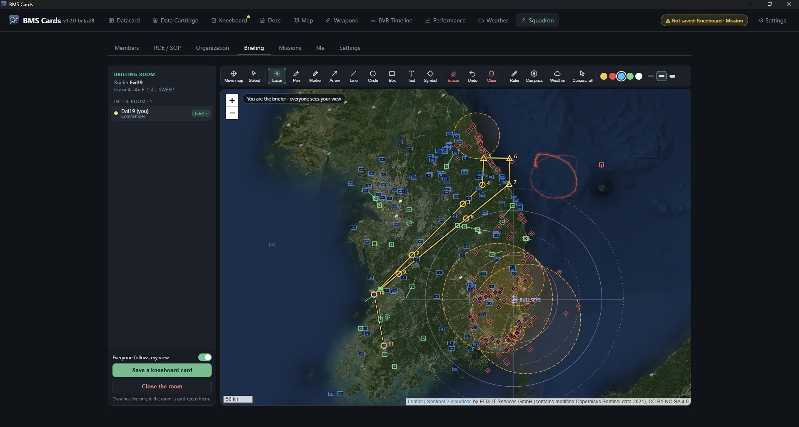

The Map page: the ATO on the left, the flight plan, the threat rings, the DTC lines and the filters.
About BMS Cards
Before the first flight
From campaign to datacard
The pages
The Squadron
Technical data
More information
1. About BMS Cards
BMS Cards does the paperwork of a mission for you. You select a flight of the campaign. The program fills the datacard, prepares the Data Cartridge (DTC) and writes the kneeboard pages that BMS shows in the cockpit.
The project
BMS Cards is an independent project of the Falcon BMS community. It is not an official Falcon BMS product.
It does not replace Falcon BMS. It uses the data of your installation and adds planning tools.
The project continues to change. Some functions have limits, and some are not yet validated in the game.
The principles
All data comes from your BMS. The program reads aircraft, weapons, airbases, radios, terrain and the campaign from your installation. It contains no game data. Thus it always agrees with the data that you fly.
Automatic first, yours always. A rule fills each cell. A value that you type stays for that flight and replaces the rule. ↺ Reset datacard puts the rules back.
No hidden rules.ⓘ Automatic rules, above the card, gives each rule and its source. Yellow cells show values from a rule or from a list.
Honest estimates. Some values are a model of the program, not data from the game. The program identifies them. Compare them with the cockpit before you trust them.
Portable. One folder contains the program and all your data. There is no installer and no automatic update.
2. Before the first flight
Put the program folder in a folder that you can write to, for example Documents or C:\Games. Do not use Program Files. If the program cannot write to its folder, it shows a warning.
Start BMS Cards.exe.
Open ⚙ Settings > Folders. Make sure that the status of the BMS folder is "found". Usually the program finds the folder automatically.
Open Settings > Diagnostics. Make sure that the program read the game data and that your BMS version is correct.
Open Squadron > Me. Type your callsign. The program also uses the name and rank of your BMS Logbook.
To install a new version: put it in a new folder. Then use Settings > Import & backup > Import from another version. This copies your settings, squadrons, missions, kneeboard cards and the original files that the program kept. It does not change the old folder. Export my data keeps the same data in one .zip file.
3. From campaign to datacard
You start and finish on the Datacard page. The other pages give more detail. Most of them send their results to the card or to the DTC automatically.
1
Open the campaign
Select a campaign or a Tactical Engagement in the menus at the top. The menus show the files in the BMS Campaign folder. The program also loads the weather, Link 16, IFF and date files.
To open a file from a different folder, use 📂 Open ▾. This menu also opens a DTC or a saved mission.
Make sure that 📅 Day 1 is the real date of the first campaign day. The sun, the moon, the METAR and the TAF use this date.
2
Select your flight
The ATO on the left shows the packages and the flights. Click your flight. The program fills the datacard.
3
Select your seat
Click the round button adjacent to your aircraft in the Flight section. The card, the DTC and the MDC then use the IFF, Link 16 and laser codes of your aircraft, and your name. If you select no seat, the card is for the flight lead.
4
Examine the card and change it
Click a cell to change it. Push Tab to go to the next cell. Some cells open a list: the roster, the target points, or the take-off speed in AB or MIL. Your changes stay with the flight. ↺ Reset datacard removes them.
MDC format shows the same data in a different layout, the Mission Data Card.
5
Add detail on the other pages (if necessary)
Map: the route, the threats and their rings, and the WEZ exposure. You can put offsets and Link 16 partners on the map.
Weapons: plan the attack (VRP or VIP, pop-up, fuzes). Then click Apply to the DTC.
Performance: the fuel plan and the Joker margin. They give Bingo, Min.Fuel and the take-off data.
Weather: the weather along the route. Select which TAF the card shows (target or landing field).
BVR Timeline: the air-to-air timeline. Fill datacard sends it to the card.
Squadron > ROE / SOP: click the ROE box or the SOP box of the card to open it. Click a preset to put it on the card.
6
Write the DTC
The Data Cartridge page shows the DTC that BMS loads. The cards with the from Datacard switch (radio presets, IFF, Link 16, laser, Bingo and ALOW, notes) follow the datacard automatically. To type their values yourself, set the switch to off, or type the values on the datacard.
Click DTC (the disk icon) to write the file. The program keeps the first original file one time in backup\dtc. ↺ Reset cancels the changes after the last save.
7
Make the kneeboard
On the Kneeboard page, import the cards, then drag them to the left and right slots of each page. A card can be the datacard, a picture, a PDF page of the Docs page or the ROE / SOP card. Click Save to BMS folder to write the DDS files. ↺ Restore puts the original BMS files back.
Set Default keeps an arrangement that you use frequently.
8
Save the mission
📦 Save mission keeps the package, the DTC, the datacard and the weapons data in one mission file. A mission opens without the campaign. You send missions to the other pilots of the squadron.
Folders, diagnostics, the preferences of each page, import and backup.
The pages that change data have an Edit switch or button. On the Data Cartridge page, each card has a ✎ Edit button. When editing is off, the page only shows the data.
5. The Squadron
BMS Cards is also a tool to coordinate a virtual squadron. The pilots plan together, brief together and send missions and cards to each other.

The Briefing room: the briefer draws on the map, and all the pilots in the room see his view.
Members: the roster and the pilots who are online.
ROE / SOP: the rules of engagement and the SOP for each phase of flight, in short form on the card. Two buttons select the presets:
Flight: your presets and your Standard.
Squadron: the presets of the squadron. Only the commander changes them.
A preset can be the default for one or more kinds of mission. A mission from a different pilot always uses the presets of the squadron.
Organization: packages, flights and seats. The commander, the mission commander and the leads change them. Templates keep a setup that you use again.
Briefing: a live room on the map. The briefer, and the pilots that he selects, draw lines, text and symbols. The other pilots can follow his view. A kneeboard card keeps the result.
Missions: the missions that you send and receive. A mission that you receive puts its DTC data into your DTC.
Me and Settings: your identity, the settings of the squadron and the connection test.
The pilots connect directly to each other (peer to peer). Public trackers only help the pilots to find each other. No server keeps the data. The program also keeps all the squadron data in its folder, so the data is available offline.
Privacy. A direct connection shows your public IP address and your local network address to the pilots of the squadron that you connect to. The program does not publish these addresses on the internet. Connect only to squadrons that you trust.
6. Technical data
Validation levels
These labels tell you how much the program checked a function. They are not levels of accuracy.
Verified
Tested against the behaviour of BMS in the game or against reference files. Examples: the Korea campaigns, the kneeboard, the DTC format, the runway data.
Implemented
Made from the BMS data structure, but not yet validated in the game. This includes the compatibility with other theaters and other BMS versions.
Estimated
A model of the program. The program identifies these values. Examples: DLZ and MAR, time of flight, A-pole and F-pole, the fuel plan, the take-off data, the radar coverage.
Not available
Not in the campaign files, thus not shown. Examples: experience, morale, supply and mission rating of a squadron.
Rules that you see frequently
Airbases. DEP and ARR are the airbases nearest to the take-off steerpoint and to the first landing steerpoint. The runway in use is the runway into the wind at that time.
MSA. The highest terrain within 5 NM on each side of the leg, plus 500 ft, rounded up to 100 ft. The program reads the terrain from the BMS height file, on a grid of 1 km.
ERAA. The highest terrain within 22 NM of the full route, plus 1,000 ft. In mountainous terrain the margin is 2,000 ft. Terrain is mountainous when its height changes by 500 ft or more in 0.5 NM.
MSA and ERAA are for information only. They use the criteria of AFMAN 11-202V3. They are not an official IFR procedure.
Fuel. The plan includes 10 minutes of start and taxi. Joker is Bingo plus the margin of the Performance page. The plan uses 300 kt for a leg that is slower than 300 kt.
Fuel when the landing field is IMC. The field is IMC when its colour code is GRN or worse: cloud of 3/8 or more below 1,500 ft, or visibility less than 5 km. Bingo then adds 10 minutes of holding at 10,000 ft above the field and 1,000 lb for an alternate. You can change the two values on the Performance page.
Target. The primary target is the first steerpoint that is not take-off, route, tanker or landing. Against ground units, its name is the hostile battalion within 1 km. STPT 99 and STPT 98 of the DTC, if used, replace the primary and the secondary target.
WEZ exposure. The program gives two values. The window starts when the route enters the first enemy SAM ring and ends when it leaves the last ring. The minutes give the total time inside the rings. Only SAMs that are spotted and have their radar are included, at their maximum range at all altitudes.
Radar coverage. An estimate, not a radar simulation. Each unit has one detection range, at 5,000 ft.
Support. The card shows the tankers, the AWACS and the JSTARS of the package. If the package has none, the card shows the nearest allied aircraft on station, with * after the callsign. For aircraft with a probe, the KC-130 comes first.
Radio presets in the DTC. Preset 6 is your flight, 13 is the first tanker, 5 is the AWACS. UHF 15 is the backup frequency of the flight. VHF 15 and higher are the flights of the package.
Your seat sets the IFF Mode 2 and Mode 3 codes, the Link 16 callsign and number, and the laser code in the DTC and in the MDC.
Files that the program writes
The DTC.ini in the BMS format, and the short campaign .ini that BMS loads with a campaign. The program keeps the original one time in backup\dtc.
The kneeboard DDS files. The program keeps the originals one time in backup\kneeboard. ↺ Restore puts them back.
Its own data, in its own folder: settings, squadrons, missions, kneeboard cards.
The permissions of the program prevent it from writing programs, scripts and system folders.
Missions
A mission is a folder with one mission file and its settings. The file contains the package, the DTC, the datacard (with your changes and your seat) and the weapons data. With the weather maps for each hour, its size is approximately 1.5 to 2 MB.
7. More information
This guide is short. The program gives the details where you need them:
ⓘ Automatic rules, above the datacard: all the rules that fill the card.
ⓘ symbols and ⓘ Info buttons on the pages: how the page operates. A long note opens in a small window.
Tooltips: put the pointer on a button, a switch or a cell. A short text tells you what it does.
Yellow cells on the card: values from a rule or from a list.
The Docs page: the BMS manuals and charts, in the program.
BMS Cards 1.2 · Falcon BMS 4.38.1 · An independent community project. The program reads all game data from your installation.